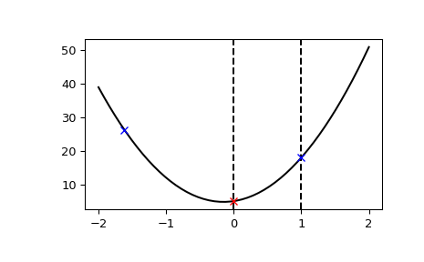

scipy.optimize.bracket¶
-
scipy.optimize.bracket(func, xa=0.0, xb=1.0, args=(), grow_limit=110.0, maxiter=1000)[source]¶ Bracket the minimum of the function.
Given a function and distinct initial points, search in the downhill direction (as defined by the initial points) and return new points xa, xb, xc that bracket the minimum of the function f(xa) > f(xb) < f(xc). It doesn’t always mean that obtained solution will satisfy xa<=x<=xb.
- Parameters
- funccallable f(x,*args)
Objective function to minimize.
- xa, xbfloat, optional
Bracketing interval. Defaults xa to 0.0, and xb to 1.0.
- argstuple, optional
Additional arguments (if present), passed to func.
- grow_limitfloat, optional
Maximum grow limit. Defaults to 110.0
- maxiterint, optional
Maximum number of iterations to perform. Defaults to 1000.
- Returns
- xa, xb, xcfloat
Bracket.
- fa, fb, fcfloat
Objective function values in bracket.
- funcallsint
Number of function evaluations made.
Examples
This function can find a downward convex region of a function:
>>> import matplotlib.pyplot as plt >>> from scipy.optimize import bracket >>> def f(x): ... return 10*x**2 + 3*x + 5 >>> x = np.linspace(-2, 2) >>> y = f(x) >>> init_xa, init_xb = 0, 1 >>> xa, xb, xc, fa, fb, fc, funcalls = bracket(f, xa=init_xa, xb=init_xb) >>> plt.axvline(x=init_xa, color="k", linestyle="--") >>> plt.axvline(x=init_xb, color="k", linestyle="--") >>> plt.plot(x, y, "-k") >>> plt.plot(xa, fa, "bx") >>> plt.plot(xb, fb, "rx") >>> plt.plot(xc, fc, "bx") >>> plt.show()
